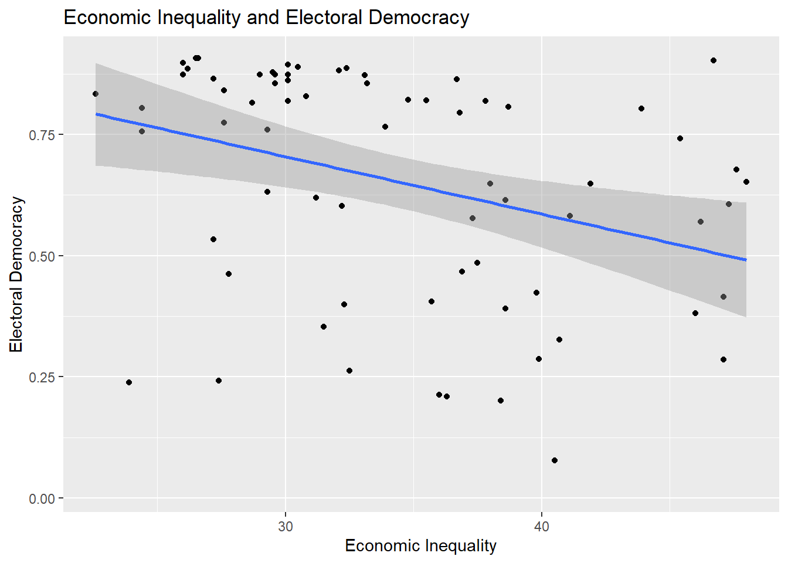
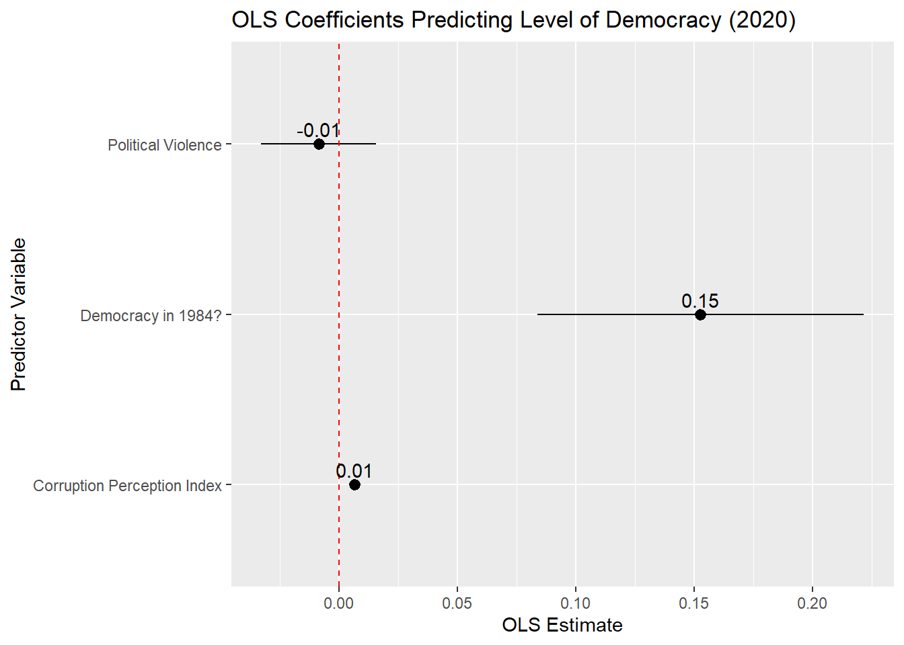
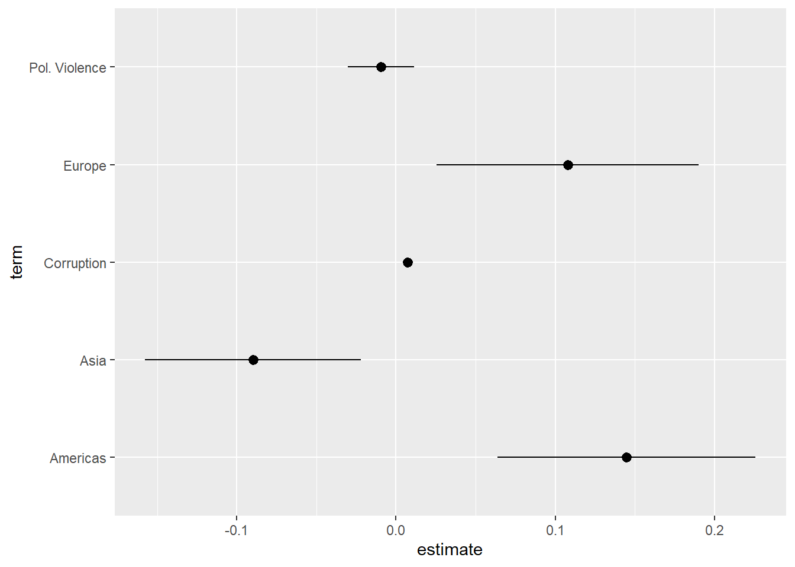
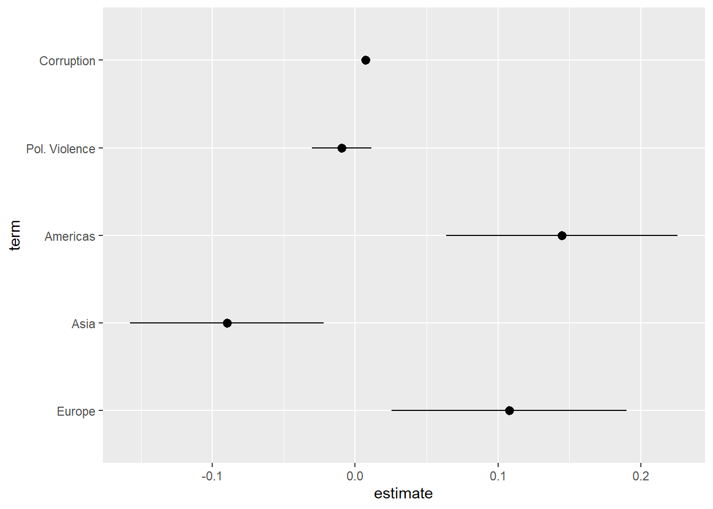
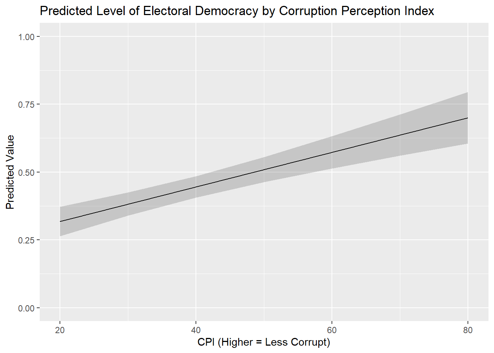
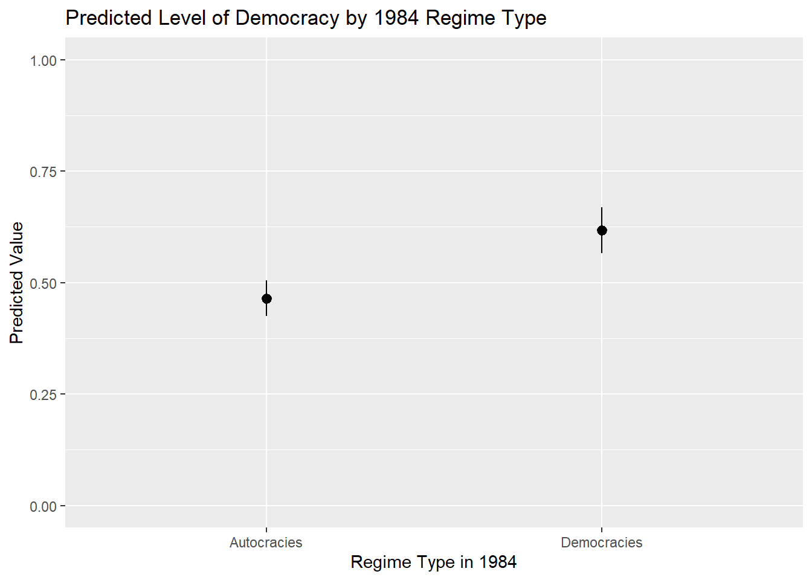
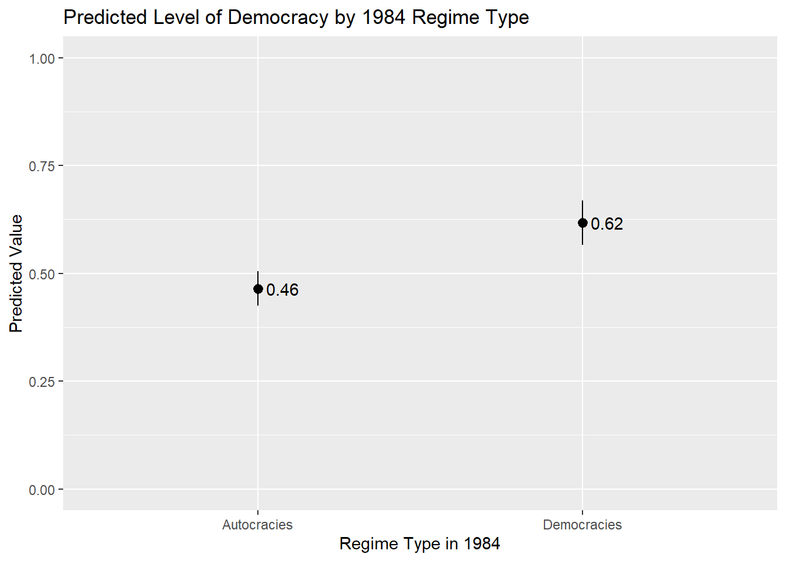

#Packages
library(marginaleffects) #Predicted values
library(modelsummary) #Regression & correlation tables
library(broom) #Model summaries, including coefficients
library(rio) #Importing data
library(tidyverse) #Data management & plotting
#Data
demdata <- import("demdata.rds")10 Reporting and Presenting Results
This chapter provides general guidelines on how to present and correctly report the output of correlation and linear regression models. Some areas include a “Reports” sub-section which focus on how to word discussions in written reports. We also include an “Instructions” sub-section in many places which provides further detail on the aesthetic considerations behind producing tables and reports for assignments and for formal research papers.
Here are the packages and data that we will use in these discussions:
10.1 Descriptive Statistics
The first step in analyzing the relationship between variables is not a correlation or a regression, but instead an investigation of the individual variables to be used in the analysis: what are the minimum and maximum values for the variables, their averages and standard deviations (if continuous), and frequencies (if binary/categorical). These descriptive statistics are commonly provided in research papers via a table that is provided either in the main text of the paper prior to the main analyses or in an appendix. This table is important because it provides readers of the paper (and the paper’s author!) important insight for understanding the results to come.
10.1.1 Continuous Variables
We can create a table of descriptive statistics with the datasummary function that is part of the modelsummary package.
datasummary(v2x_polyarchy + gini_2019
~ Mean + SD + Min + Max + N, data = demdata)| Mean | SD | Min | Max | N | |
|---|---|---|---|---|---|
| v2x_polyarchy | 0.51 | 0.25 | 0.01 | 0.91 | 179 |
| gini_2019 | 34.36 | 6.87 | 22.60 | 48.00 | 70 |
Here’s how to read the syntax:
datasummary(-
We use the
datasummaryfunction on the variables in brackets v2x_polyarchy + gini_2019-
These are the variables we want to include in the table. We can add multiple variables using the + sign. You could create a table with all of the variables from the dataset using
All(dataset name), although this would likely be an overly long/complicated table if the dataset has many variables. ~ Mean + SD + Min + Max + N,-
We can specify what descriptives statistics we want displayed in the table by giving their name after a tilde (
~). These are the most commonly provided statistics. data = demdata)-
Finally, we indicate the dataset where the variables are stored/located.
This table provides all of the information a reader might find necessary. For instance, we can see that the N (number of observations) for the two variables is not the same, which means that a bivariate analysis of the two variables will use far fewer cases than available in v2x_polyarchy due to there being a lot of missing observations on gini_2019.
10.1.2 Binary and Categorical Variables
We can also add binary and categorical variables to a table using datasummary(), but here you usually provide different statistics: the N and the percentage of observations per category.
# Create the factor variables
demdata <- demdata |>
mutate(
TYPEDEMO1984_factor = factor(TYPEDEMO1984,
levels = c(1, 2),
labels = c("Autocracies", "Democracies")),
Typeregime2006_factor = factor(Typeregime2006,
levels = c(1, 2, 3),
labels = c("Liberal democracy",
"Electoral democracy",
"Autocracy")))
# Table with % and N
datasummary(TYPEDEMO1984_factor + Typeregime2006_factor
~ N + Percent(), data = demdata)| N | Percent | ||
|---|---|---|---|
| TYPEDEMO1984_factor | Autocracies | 86 | 48.04 |
| Democracies | 57 | 31.84 | |
| Typeregime2006_factor | Liberal democracy | 71 | 39.66 |
| Electoral democracy | 53 | 29.61 | |
| Autocracy | 41 | 22.91 |
~ N + Percent()-
We indicate the statistics we want after the tilde (
~). These are the commonly used statistics for factor variables. One important note: the percentages calculated here are based on the total number of observations in the dataset including observations with missing data on the variable. There are 179 total observations in this dataset; the reported % for Autocracy is thus \(\frac{41}{179} * 100 = 22.91\). However, 14 observations do not have data on this variable; the % for Autocracy among cases with non-missing data is \(\frac{41}{41 + 53 + 71} * 100 = 24.85\). We show a solution for this issue in the next example.
The different syntax above suggests that we should make separate tables for continuous and binary/categorical variables. However, this is not necessary. R transforms factor variables into dummy (0/1 scaled) variables behind the scenes when performing analyses. The mean of a 0/1 variable represents the proportion of observations in the category. If we want to combine continuous and binary/categorical variables in a table, then we can create dummy variables for the categories of the latter variables and include them in the table syntax.
While we can manually create dummy variables ourselves, this may be cumbersome with categorical variables that have many categories. Here we will use commands from the fastDummies package to simplify this process.
# Load the package; this would usually be done at the beginning of an R Script file
library(fastDummies)
# Creating dummy variables for all categories of these variables
demdata <- dummy_cols(demdata,
select_columns = c("TYPEDEMO1984",
"Typeregime2006")) Here is how to read the syntax above:
dummy_cols(demdata-
The name of the command is
dummy_cols(). The first thing we provide is the name of our dataset, heredemdata. select_columns = c("TYPEDEMO1984", "Typeregime2006"))-
We then provide the name of the columns in our data that we want this command to create dummies from. Here we specify two variables: a binary and a categorical variable. This command will produce a dummy (0/1) scaled variable for each category of these variables.1 The resulting dummy variables will have the following name structure: original variable name_category value. The non-factorized version of
TYPEDEMO1984that we use in this example takes on two values: 1 = democracies and 2 = autocracies.2 This command thus creates the following dummy variables:TYPEDEMO1984_1(1 = observation had a score of 1 on the original variable, 0 = observation had a value of 2 on the original variable) andTYPEDEMO1984_2(1 = observation had a score of 2 on the original variable, 0 = observation had a score of 1 on the original variable). We can see this more clearly by looking at the cross-tabulation of the two variables below.
# Crosstab of original variable and dummies via dummy_cols()
table(demdata$TYPEDEMO1984, demdata$TYPEDEMO1984_1)
0 1
1 0 86
2 57 0table(demdata$TYPEDEMO1984, demdata$TYPEDEMO1984_2)
0 1
1 86 0
2 0 57We can then include these dummy variables in the datasummary command along with continuous variables.
# Make a table with both continuous and factor variables
datasummary(v2x_polyarchy + gini_2019 +
TYPEDEMO1984_1 +
TYPEDEMO1984_2 +
Typeregime2006_1 +
Typeregime2006_2 +
Typeregime2006_3
~ Mean + SD + Min + Max + N,
data = demdata)| Mean | SD | Min | Max | N | |
|---|---|---|---|---|---|
| v2x_polyarchy | 0.51 | 0.25 | 0.01 | 0.91 | 179 |
| gini_2019 | 34.36 | 6.87 | 22.60 | 48.00 | 70 |
| TYPEDEMO1984_1 | 0.60 | 0.49 | 0.00 | 1.00 | 143 |
| TYPEDEMO1984_2 | 0.40 | 0.49 | 0.00 | 1.00 | 143 |
| Typeregime2006_1 | 0.43 | 0.50 | 0.00 | 1.00 | 165 |
| Typeregime2006_2 | 0.32 | 0.47 | 0.00 | 1.00 | 165 |
| Typeregime2006_3 | 0.25 | 0.43 | 0.00 | 1.00 | 165 |
The entries for the dummy variables indicate the proportion of cases with a score of 1 on the variable. The calculation of this value ignores observations with a missing value on the variable, so we get the correct N and percentages here. Here we have included dummy variables for both categories of the binary TYPEDEMO_1984 variable, but in practice we would only include one of them (e.g., we might only include the dummy for the “democracy” dummy TYPEDEMO1984_2).
10.1.3 Presenting Descriptive Tables
The example tables above show the variables’ names from the dataset in the table. However, this will likely confuse readers of your table since they don’t have your data and do not have an intuitive understanding of what the labels represent. You should thus change the names of the variables before/when creating the table. One way we can do this is by creating a dataset with just the variables to be used in the table and using the rename() function.
#Create the dataset
table_data <- demdata |>
select(v2x_polyarchy, gini_2019,
TYPEDEMO1984_1, TYPEDEMO1984_2,
Typeregime2006_1, Typeregime2006_2, Typeregime2006_3) |>
rename(
"Democracy Score (2020)" = v2x_polyarchy,
"Economic Inequality (2019)" = gini_2019,
"Autocratic Regime (1984)" = TYPEDEMO1984_1,
"Democratic Regime (1984)" = TYPEDEMO1984_2,
"Liberal Democracy (2006)" = Typeregime2006_1 ,
"Electoral Democracy (2006)" = Typeregime2006_2,
"Autocracy (2006)" = Typeregime2006_3)
# Create the table with all variables
datasummary(All(table_data)
~ Mean + SD + Min + Max + N, data = table_data)- 1
-
Selects just these variables for inclusion in the new dataset named
table_data - 2
-
All(data)tells the command to create a table using all of the variables in the dataset.
| Mean | SD | Min | Max | N | |
|---|---|---|---|---|---|
| Democracy Score (2020) | 0.51 | 0.25 | 0.01 | 0.91 | 179 |
| Economic Inequality (2019) | 34.36 | 6.87 | 22.60 | 48.00 | 70 |
| Autocratic Regime (1984) | 0.60 | 0.49 | 0.00 | 1.00 | 143 |
| Democratic Regime (1984) | 0.40 | 0.49 | 0.00 | 1.00 | 143 |
| Liberal Democracy (2006) | 0.43 | 0.50 | 0.00 | 1.00 | 165 |
| Electoral Democracy (2006) | 0.32 | 0.47 | 0.00 | 1.00 | 165 |
| Autocracy (2006) | 0.25 | 0.43 | 0.00 | 1.00 | 165 |
The modelsummary website shows another way of renaming variables but within the confines of the command itself; see here.
10.1.4 Saving to a Word Document
We can export this table to a Word document with the following syntax.
datasummary(All(table_data)
~ Mean + SD + Min + Max + N, data = table_data,
output = "descr_table1.docx")output = 'descr_table1.docx'-
Here, we have the command save the table to a Word (.docx) file named “descr_table1”. This file would be saved to your R project folder. you can also specify a subfolder, e.g., “output/descr_table1.docx”.
ImportantWarning!
This command be act a bit temperamental in cases where you save a table to file, open it outside of R in Word (for instance), and then re-run the syntax in R to create the table again while the file is still open in Word. We recommend closing the file in Word before trying to update table output produced via R to avoid complications.
10.2 Scatterplots
We can provide a visual representation of the bivariate relationship between two continuous variables via a scatterplot. Here is an example:
ggplot(demdata, aes(x = gini_2019, y = v2x_polyarchy)) +
geom_point() +
geom_smooth(method = "lm") +
labs(x = "Economic Inequality",
y = "Electoral Democracy",
title = "Economic Inequality and Electoral Democracy")
10.2.1 Reports
Here are some general guidelines for describing scatterplots:
- Discuss the observed relationship between the two variables (is there a positive relationship? a negative one?) and the apparent strength of this relationship. Use a correlation coefficient to flesh out these discussions as describing a relationship based on only a plot can be tricky and potentially misleading.
- If there are any apparent outliers or extreme values, then make a note of them.
10.2.2 Instructions
- Provide informative labels to your x-axis, y-axis, and a title
- One typically adds a fitted linear regression line to the figure to aid in interpretation. This is controlled via
method = "lm". This can be changed tomethod = "loess"to instead fit a locally estimated scatterplot smoothing line; this is useful for checking for non-linear patterns in the data. See Section 9.3.2 - Be mindful of the size of the text on your axes: text that is too small (or too large) may be hard to read. The quickest way to change the font size of the figure is by altering the theme of the figure, e.g., adding
+ theme_grey(14)or+ theme_bw(18)to the syntax; the number in parentheses alters the font size for all labels. You can find a list of the built-in ggplot themes here while additional examples are available via the ggthemes package. One can also obtain more fine-grained control over text size (e.g., change just the title font or just the x-axis font) and other elements of figures, viatheme(), but that goes beyond the scope of this book. - The plot above provides the bivariate linear regression line between the two variables. One could also annotate the figure with the specific parameters of this regression line (the values for the Intercept and the slope coefficient) by using
geom_text(). For instance, one might add a+at the end oflabs()and then add the following on the next line:geom_text(x = 40, y=0.1, label="Dem Score = 1.06 + (-0.012 * Inequality)"). This would add the text found in thelabel=portion of the syntax at the coordinates specified byx=andy=. This process may involve some trial and error regarding the x and y-coordinates in order to create the best looking plot. There also exist some specialized R packages that include functions that will facilitate this process (such as this function from theggpubrpackage) but their use is beyond the scope of this document.
10.3 Correlations
The correlation that we will use for this example focuses on the relationship between a measure of a country’s level of economic inequality in the year 2019 (higher = more unequal; gini_2019) and the country’s level of electoral democracy (higher = more democratic; v2x_polyarchy).
cor1 <- cor.test(x = demdata$gini_2019,
y = demdata$v2x_polyarchy,
method = "pearson")
cor1
Pearson's product-moment correlation
data: demdata$gini_2019 and demdata$v2x_polyarchy
t = -3.0433, df = 68, p-value = 0.003325
alternative hypothesis: true correlation is not equal to 0
95 percent confidence interval:
-0.5374741 -0.1211040
sample estimates:
cor
-0.3462257 See Section 3.3 for guidelines on how to interpret correlation coefficients.
10.3.1 Reports
Reports should include:
- A discussion of the direction of the relationship on offer (i.e., is it positive or negative) that draws on the coding of the variables in the correlation alongside the specific correlation observed in the analysis.
- A conclusion about the null hypothesis, i.e., statistical significance.
- Reports are typically made at 95% (p < 0.05), 99% (p < 0.01), and 99.9% (p < 0.001) levels3
- Report at the highest level that is justified by the p-value. For instance:
- If p = 0.04, then p < 0.05 (significant at 95% level)
- If p = 0.004, then p < 0.01 (significant at 99% level)
- If p = 0.0000005, then p < 0.001 (significant at 99.9% level)
- It is not common to go above p < 0.001 (e.g., we would typically not say that p < 0.000001, just p < 0.001). We do not write p < 0.000.
- A reference to the substantive size of the relationship (see Section 3.3)
TipReport
Higher levels of economic inequality are associated with lower levels of electoral democracy (\(r\) = -0.35). This association is moderate in size and statistically significant (p \(<\) 0.01).
10.3.2 Presentation: Correlation Tables
When we are only discussing two variables then we can simply describe their correlation in the text of our report as shown above. However, when we are writing papers that feature analyses with multiple continuous variables, then it is good practice to include a correlation table showing their inter-relationship either in the main body of the text or in an appendix. We can use the datasummary_correlation() command from the modelsummary package to do so. Here is an example using four variables:
demdata |>
select(v2x_polyarchy, gini_2019, cpi, gdp_ppp) |>
rename("Elec. Democracy" = v2x_polyarchy,
"Econ Inequality" = gini_2019,
"Corruption" = cpi,
"GDP" = gdp_ppp) |>
datasummary_correlation(method = "pearson",
title = "Relationship between Main Continuous Variables")| Elec. Democracy | Econ Inequality | Corruption | GDP per capita, PPP (constant 2017 international $) | |
|---|---|---|---|---|
| Elec. Democracy | 1 | . | . | . |
| Econ Inequality | -.35 | 1 | . | . |
| Corruption | .66 | -.53 | 1 | . |
| GDP per capita, PPP (constant 2017 international $) | .40 | -.52 | .79 | 1 |
NoteOutput Explanation
Each cell provides the correlation coefficient for a pair of variables. The correlation between Corruption and Economic inequality, for instance, is -0.53, while the correlation between GDP and Corruption is 0.79.
Note: The title is presented at the bottom of the table in this document, but would print at the top when saving to a Word document (see below), which is the more conventional placement.
Here is how to read the syntax above:
demdata |> select(…)-
In these first two lines of code, we specify which data object has the variables we are interested in (
demdata) and then ask R to only select the variables we want to correlate with one another. If we did not have the second line thendatasummary_correlation()would try and produce correlations between all of the variables in our dataset. rename(…)-
We rename the variables we have selected in these lines. The information in parentheses to the left of the equals sign is the name we want the variable to take on after renaming. The information on the right of the equals sign is the variable’s original name. If we did not take this step, then the underlying variable names (
gini_2019, etc.) would be used in the table thereby making it harder to understand. datasummary_correlation(method = "pearson", title = "...")-
This line of syntax performs the correlations and provides a nice title for the table. Much as earlier we can control what type of correlation is calculated (Pearson correlation:
method = "pearson"; Spearman:method = "spearman").
We can save this table to a new file that we can open in Microsoft Word so that we can copy and paste it into reports written outside of R Markdown by adding a final line to our syntax (note: the table will not be displayed in R when you specify this option):
demdata |>
select(v2x_polyarchy, gini_2019, cpi, gdp_ppp) |>
rename("Elec. Democracy" = v2x_polyarchy,
"Econ Inequality" = gini_2019,
"Corruption" = cpi,
"GDP" = gdp_ppp) |>
datasummary_correlation(method = "pearson",
title = "Relationship between Main Continuous Variables",
output = "correlation table example.docx")output = "correlation table example.docx"-
This line controls the saving process. It tells the command that we want to save a new file; that we want it to be called “correlation_table” (we could, of course, name it something else); and that we want it to be a “.docx” file, the default file type for Microsoft Word. We could then open this file in Word and make further changes/edits, or copy and paste it into a report, as needed.4
ImportantWarning!
This command be act a bit temperamental in cases where you save a table to file, open it outside of R in Word (for instance), and then re-run the syntax in R to create the table again while the file is still open in Word. We recommend closing the file in Word before trying to update table output produced via R to avoid complications.
10.3.2.1 Instructions
- We typically provide the dependent variable first in this type of table. We can do this by having this variable be the first one named in the
select()line of the syntax above. - Rename your variables to something easy to understand for your readers (i.e., do not use the variable names in your dataset in the table)
- Provide an informative title to your table to communicate its contents.
- It is common to add asterisks to these types of tables to communicate statistical significance (e.g.,: *** = p < 0.01, ** = p < 0.01, * = p < 0.05). Unfortunately there is (as of yet) no easy way to directly do this via the
datasummary_correlation()command. One can add these symbols manually by first saving the table to a .docx (Word) file and adding them as needed. - Correlation (and regression) tables created using the
modelsummarysuite of commands can be further styled in a variety of ways; see this webpage for some of the possibilities, although these are beyond the scope of this book and not required for your assignments in Statistics II.
10.4 Reporting Linear Regression
Linear regression (otherwise referred to as least squares or ordinary least squares [OLS] regression) models provide a way of modelling changes in the mean of a dependent variable as a linear function of one or more independent variables. We use example data from the demdata dataset and predict electoral democracy scores in the year 2020 based on economic inequality, the country’s regime status in the year 1984 (democracy or autocracy), and a categorical variable indicating the region of the world in which the country is situated (1 = Europe, 2 = Africa, 3 = Asia, 4 = Americas).
Here is the example output in R; you would not include this output in your academic papers but would instead create a more formal table (see below) or coefficient plot.
#Convert region into a factor
demdata <- demdata |>
mutate(region = factor(region,
levels=c(2,3,1,4), #Ref group is listed first
labels=c("Africa", "Asia", "Europe", "Americas")))
#Run and store the model
example_model <- lm(v2x_polyarchy ~ gini_2019 + TYPEDEMO1984_factor + region,
data=demdata)
#Results
summary(example_model)
Call:
lm(formula = v2x_polyarchy ~ gini_2019 + TYPEDEMO1984_factor +
region, data = demdata)
Residuals:
Min 1Q Median 3Q Max
-0.52522 -0.06736 0.03585 0.09521 0.37555
Coefficients:
Estimate Std. Error t value Pr(>|t|)
(Intercept) 0.899777 0.271068 3.319 0.00175 **
gini_2019 -0.013400 0.005693 -2.354 0.02282 *
TYPEDEMO1984_factorDemocracies 0.067402 0.061709 1.092 0.28028
regionAsia 0.040365 0.149003 0.271 0.78765
regionEurope 0.244037 0.157307 1.551 0.12753
regionAmericas 0.253473 0.150635 1.683 0.09907 .
---
Signif. codes: 0 '***' 0.001 '**' 0.01 '*' 0.05 '.' 0.1 ' ' 1
Residual standard error: 0.1893 on 47 degrees of freedom
(126 observations deleted due to missingness)
Multiple R-squared: 0.4378, Adjusted R-squared: 0.378
F-statistic: 7.32 on 5 and 47 DF, p-value: 3.842e-05See earlier chapters for interpretation guidelines (e.g,. Section 6.1).
10.4.1 Reports
The correct report includes:
- A discussion of the direction of the relationship on offer (i.e., is the relationship between variables positive or negative?) and an interpretation of what this means drawing upon the coding of the variables in the equation.
- Discussions of coefficients from multiple linear regression should indicate that these relationships occur holding the effect of the other variables in the model constant, e.g., “ceteris paribus”.
- A conclusion about the null hypothesis with reference to the p-value and/or confidence interval
- Coefficients with p-values greater than 0.05 are generally described as not statistically significant or not statistically significant at conventional levels. In such cases, one can indicate that the relationship is not statistically significant and note the p-value.
- Reports of statistical significance are typically made at 95% (p < 0.05), 99% (p < 0.01), and 99.9% (p < 0.001) levels.5 Report at the highest level that is justified by the p-value. For instance:
- If p = 0.04, then p < 0.05 (significant at 95% level)
- If p = 0.004, then p < 0.01 (significant at 99% level)
- If p = 0.0000005, then p < 0.001 (significant at 99.9% level)
- It is not common to go above p < 0.001 (e.g., we would typically not say that p < 0.000001, just p < 0.001). We do not write p < 0.000.
- The confidence interval can also be used to assess statistical significance and communicate the uncertainty surrounding regression estimates. If you include the CI in your discussion, then you can place it in parentheses after the coefficient: “The coefficient for economic inequality is -0.01 (95% CI: -0.02, -0.002)”.
- It is not as common to directly reference the t-statistic in discussions of the statistical significance of regression coefficients, but it is not problematic to do so either. If doing so, then you should generally list it alongside the p-value: “(t = 1.98, p < 0.05)”.
Here are examples for gini_2019 (a continuous variable) and TYPEDEMO1984 (a binary variable)
TipReport
gini_2019: We expect the level of electoral democracy to decrease as economic inequality increases holding constant the effects of prior regime status and world region. Based on our model, we expect the level of electoral democracy to decrease by -0.01 scale points on average with each one unit increase in inequality. This association is statistically significant (p < 0.05).
TYPEDEMO1984_factor: The results of the regression model show that countries recorded as democratic in 1984 are, on average, 0.07 scale points more democratic in 2020 than countries with equivalent levels of inequality and world region but recorded as an autocracy in 1984. This difference is not statistically significant at conventional levels (p = 0.28).
Additional notes for writing up results for formal papers:
- The interpretation above focuses on just the coefficient and its interpretation. A stronger discussion in an academic paper would include a discussion about predicted values to help communicate the potential substantive importance of the relationship on offer. For instance, one could note the predicted value of electoral democracy when economic inequality is “high” vs. when it is “low” based on the model (where “high” and “low” are based on attributes of the variable under investigation). A plot of predicted values may further enrich these discussions. See Section 10.7 for further discussion.
- If the goal of one’s model is to assess the relationship between a particular independent variable and the dependent variable while adjusting for potential confounding influences, then a discussion of the coefficients for “control” variables is generally not needed.
- Discussions of regression results in academic papers seldom focus on the Intercept term. The most notable exceptions would be bivariate models where the predictor variable is scaled such that the the value of 0 refers to a particular category of relevance. For instance, if the predictor variable were a binary variable for whether some observations were randomly assigned to an experimental treatment condition (x = 1) or to a control group (x = 0), then the Intercept would tell us the mean of Y for those in the control group, which would be very useful to know!
- Be mindful of the use of “effect” language, e.g., the “effect of variable X”. This brings to mind causal effects (X causes Y), but causal inference requires some strong assumptions to be met. It is typically safest to discuss results as associations.
10.5 Presenting Linear Regression: Regression Tables
The most common way of reporting regression results in a paper is a regression table. One useful package for creating these tables is called modelsummary. Within this package is the aptly named function modelsummary(), which will create regression tables for us.
10.5.1 Regression Tables with a Single Model
As a first example, we will create a regression table using the results from a model wherein electoral democracy in 2020 is regressed on just the level of corruption in the country “cpi”. Here is the default output of the command without specifying any other options:
#Run and store the model
model1 <- lm(v2x_polyarchy ~ cpi, data = demdata)
#The basic command
modelsummary(model1)| (1) | |
|---|---|
| (Intercept) | 0.140 |
| (0.036) | |
| cpi | 0.009 |
| (0.001) | |
| Num.Obs. | 174 |
| R2 | 0.438 |
| R2 Adj. | 0.435 |
| AIC | -78.1 |
| BIC | -68.6 |
| Log.Lik. | 42.061 |
| F | 134.123 |
| RMSE | 0.19 |
modelsummary(-
This is the name of the command
model1-
This is the name of the model that will be presented in the table.
This table can be improved. First, we should communicate something about the statistical significance of the coefficients, e.g., via asterisks or other symbols. Second, we should give more informative labels for our independent variables. Third, the default output shows a variety of model fit statistics that we are not interested in and which we will want to remove from the table. Finally, we should add information to the table such as a title describing its contents and a note at the bottom indicating what the values in the table represent.
Here is the basic syntax that we will use to produce regression tables:
modelsummary(model1,
stars = TRUE,
coef_rename = c(
"(Intercept)" = "Intercept",
"cpi" = "Corruption Perception Index"),
gof_map = c("nobs", "r.squared", "adj.r.squared"),
title = "Predicting Electoral Democracy with Level of Corruption",
notes = "OLS coefficients with standard errors in parentheses")- 1
- This adds “stars” to signal statistical significance
- 2
-
We rename our variables for better communication via
coef_rename() - 3
-
We select which model fit statistics via
gof_map() - 4
-
We can give a title to the table via
title = - 5
-
And, finally, provide some notes at the bottom of the table via
notes =
| (1) | |
|---|---|
| + p < 0.1, * p < 0.05, ** p < 0.01, *** p < 0.001 | |
| OLS coefficients with standard errors in parentheses | |
| Intercept | 0.140*** |
| (0.036) | |
| Corruption Perception Index | 0.009*** |
| (0.001) | |
| Num.Obs. | 174 |
| R2 | 0.438 |
| R2 Adj. | 0.435 |
stars = TRUE,-
This adds symbols to communicate information about the statistical significance of a coefficient (e.g., the little stars or asterisks next to some of the coefficients). Information is automatically added to the bottom of the table about what each symbol means/represents. This portion of the command can remain the same when you create your own OLS/linear regression table.
coef_rename = c(...)-
The
modelsummary()command will use the name of the variable by default when creating a table. One way we change these labels is via thecoef_rename()option. We begin by noting the name of the term we want renamed (e.g.,cpi) and then, after the equals sign, what we want it to be labelled as in the final table (“Corruption Perception Index”). This latter information needs to be in quotation marks. We use double quotation marks here (“word”), but you can also use a single quotation mark (‘word’) - either works as long as you are consistent in your use. gof_map = c(...)-
The
modelsummary()command will show a number of “goodness of fit” statistics by default. For our purposes we wish to only show three of them: the number of observations in the model, the R2, and the Adjusted R2. There are a couple of ways of removing unwanted fit statistics from the table. Ingof_map()we provide the names of the statistics we want to include and then the function will filter out everything that doesn’t match these labels.6 Here, we have the command include the number of observations (“nobs”), the R2 statistic (“r.squared”), and the adjusted R2 (“adj.r.squared”). This information can remain the same when you create your own OLS/linear regression table. title = ...-
This specifies a title for the table. The title is presented on the bottom in the output of this document, but would print at the top of the table when exporting to Word (see below.)
notes = (...)-
This specifies the contents of the notes at the bottom of the table. It is conventional to indicate what is being presented (e.g., “OLS coefficients”) and what the information underneath these values represents (e.g., “with standard errors…”).
10.5.2 Regression Tables with Multiple Models
We can also use modelsummary() to produce regression tables that contain multiple models. For instance, we could show the results from the model with just “cpi” and then one additional predictor variables. In order to do this, we must first combine the different models into an R object called a “list” and then use the list in our modelsummary() command. Most of the options in the modelsummary() command can stay the same but the coef_rename() portion for renaming new variables and the title portion should be updated.
#Our second model
model2 <- lm(v2x_polyarchy ~ cpi + v2caviol + region, data = demdata)
#Creating a list
model_list <- list(model1, model2)
#Using the list in modelsummary()
modelsummary(model_list,
stars = TRUE,
coef_rename = c(
"(Intercept)" = "Intercept",
"cpi" = "Corruption Perception Index",
"v2caviol" = "Political Violence",
"regionAsia" = "Asia",
"regionEurope" = "Europe",
"regionAmericas" = "Americas"),
gof_map = c("nobs", "r.squared", "adj.r.squared"),
title = "Predicting Electoral Democracy with Corruption, Political Violence, and Region",
notes = "OLS coefficients with standard errors in parentheses. Reference group for region = Africa")| (1) | (2) | |
|---|---|---|
| + p < 0.1, * p < 0.05, ** p < 0.01, *** p < 0.001 | ||
| OLS coefficients with standard errors in parentheses. Reference group for region = Africa | ||
| Intercept | 0.140*** | 0.178*** |
| (0.036) | (0.038) | |
| Corruption Perception Index | 0.009*** | 0.007*** |
| (0.001) | (0.001) | |
| Political Violence | -0.009 | |
| (0.010) | ||
| Asia | -0.090** | |
| (0.034) | ||
| Europe | 0.108* | |
| (0.042) | ||
| Americas | 0.145*** | |
| (0.041) | ||
| Num.Obs. | 174 | 174 |
| R2 | 0.438 | 0.559 |
| R2 Adj. | 0.435 | 0.546 |
The default behavior here is to name the first model “Model 1” and the second one “Model 2”. This is typically fine. We we can also specify names for each column when we set combine the models into a list object if we so desired. This is most useful if the models differed in some fundamental way (e.g., the models predict different dependent variables and you need a way to signal that to consumers of your table).
#A list with names
model_list_named <- list(
"Just Corruption" = model1,
"Full Model" = model2)
#Create the table
modelsummary(model_list_named,
stars = TRUE,
coef_rename = c(
"(Intercept)" = "Intercept",
"cpi" = "Corruption Perception Index",
"v2caviol" = "Political Violence",
"regionAsia" = "Asia",
"regionEurope" = "Europe",
"regionAmericas" = "Americas"),
gof_map = c("nobs", "r.squared", "adj.r.squared"),
title = "Predicting Electoral Democracy with Corruption, Political Violence, and Region",
notes = "OLS coefficients with standard errors in parentheses. Reference group for region = Africa")| Just Corruption | Full Model | |
|---|---|---|
| + p < 0.1, * p < 0.05, ** p < 0.01, *** p < 0.001 | ||
| OLS coefficients with standard errors in parentheses. Reference group for region = Africa | ||
| Intercept | 0.140*** | 0.178*** |
| (0.036) | (0.038) | |
| Corruption Perception Index | 0.009*** | 0.007*** |
| (0.001) | (0.001) | |
| Political Violence | -0.009 | |
| (0.010) | ||
| Asia | -0.090** | |
| (0.034) | ||
| Europe | 0.108* | |
| (0.042) | ||
| Americas | 0.145*** | |
| (0.041) | ||
| Num.Obs. | 174 | 174 |
| R2 | 0.438 | 0.559 |
| R2 Adj. | 0.435 | 0.546 |
10.5.3 Saving to File
While it is becoming more common to use R Markdown to directly write academic papers, many people who use R will want to export results from R for use in a different word processor (e.g., Microsoft Word, Google Docs, etc.) where we can make further edits before adding the table to our reports/papers. We can do this by adding another line of syntax to our modelsummary() command wherein we tell the command to create an output file:
modelsummary(model_list_named,
stars = TRUE,
coef_rename = c(
"(Intercept)" = "Intercept",
"cpi" = "Corruption Perception Index",
"v2caviol" = "Political Violence",
"regionAsia" = "Asia",
"regionEurope" = "Europe",
"regionAmericas" = "Americas"),
gof_map = c("nobs", "r.squared", "adj.r.squared"),
title = "Predicting Electoral Democracy with Corruption, Political Violence, and Region",
notes = "OLS coefficients with standard errors in parentheses. Reference group for region = Africa",
output = "example_regression_table.docx") output = "example_regression_table.docx"-
This line controls the saving process. It tells the command that we want to save a new file; that we want it to be called “example_regression_table”; and that we want it to be a “.docx” file, the default file type for Microsoft Word. The file will be saved to our working directory unless we specify a different output location (e.g., “output/example_regression_table.docx”). We could then open this file in Word and copy and paste it into our report as needed. See the Warning above about saving and editing correlation tables as it also applies here.
10.5.4 Instructions
- Provide an informative title, variable labels, and a note indicating what is being reported in the table.
- The coefficients for categorical variables provide estimates of the difference in means between each included category and the omitted reference group (African countries in this example). You can indicate the identity of the reference category in one of three ways. First, you could provide this information in the notes section as shown in the examples above. Second, you can note the reference category in the variable label (e.g,. “Asia (reference group: Africa”). You would do this while renaming the variable (e.g.,
coef_rename('regionAsia' = 'Asia (ref group: Africa)'). Third, you can add a row to your table with this information. How to do this is described on themodelsummarywebpage. - It is standard to provide the unstandardized coefficient with standard errors in parentheses underneath the coefficient. This is the default behavior of the
modelsummarycommand. One can also provide the standard error in a column next to the coefficient (see this section of themodelsummarywebsite for how), although this can be problematic if the table includes many models. The command will also generally round the coefficient and standard errors to 3 digits by default, which is generally what we want. - The
modelsummaryfunction will, by default, provide a numeric label for each model included in the table (e.g,. (1), (2), etc.). It can make sense to provide a specific title of your own in some circumstances. For instance, if one were creating a table with the results from multiple models that have the same IVs but different DVs, then one could use the name of the DV as the name for each column. See above. - The
modelsummarywebpage provides additional insight into how to further customize the appearance of these types of tables by, for instance, changing which table-making packagemodelsummary()uses when creating the table (see here for more).
10.6 Presenting Linear Regression: Coefficient Plots
Regression tables are the most common way of reporting the results of a regression in paper or report. A second way that the results of a regression model may be presented in formal papers and presentations is via a coefficient plot. A coefficient plot provides a graphical overview of the coefficients (with confidence intervals) for the independent variables in a model. The Intercept term is generally omitted from these types of plots.
As an example, let us plot the results from a model predicting electoral democracy with corruption, political violence, and regime status in 1984. We first run our model. We then use tidy() to create a data object that has the coefficients from our model and their associated 95% confidence interval.
#Model
plot_model <- lm(v2x_polyarchy ~ cpi + v2caviol + TYPEDEMO1984_factor, data = demdata)
#Store the model results as a tidied data object
#NEED to ask for the confidence interval
plot_model_tidied <- tidy(plot_model, conf.int = TRUE)
#here is what it looks like
plot_model_tidied# A tibble: 4 × 7
term estimate std.error statistic p.value conf.low conf.high
<chr> <dbl> <dbl> <dbl> <dbl> <dbl> <dbl>
1 (Intercept) 0.187 0.0426 4.40 2.19e-5 0.103 0.272
2 cpi 0.00636 0.00106 6.01 1.55e-8 0.00427 0.00846
3 v2caviol -0.00872 0.0123 -0.712 4.78e-1 -0.0330 0.0155
4 TYPEDEMO1984_factorDe… 0.153 0.0349 4.37 2.39e-5 0.0837 0.222 The tidy() command creates a data object that we can then use as input to a subsequent ggplot() figure. However, we should do some house cleaning first. In particular, we should recode the term variable so that we give informative labels to our variables and hence make the resulting figure easier to understand.7
#recoding term to get nicer names to plot:
plot_model_tidied <- plot_model_tidied |>
mutate(term = recode(term,
"cpi" = "Corruption Perception Index",
"v2caviol" = "Political Violence",
"TYPEDEMO1984_factorDemocracies" = "Democracy in 1984?"))
plot_model_tidied# A tibble: 4 × 7
term estimate std.error statistic p.value conf.low conf.high
<chr> <dbl> <dbl> <dbl> <dbl> <dbl> <dbl>
1 (Intercept) 0.187 0.0426 4.40 2.19e-5 0.103 0.272
2 Corruption Perception… 0.00636 0.00106 6.01 1.55e-8 0.00427 0.00846
3 Political Violence -0.00872 0.0123 -0.712 4.78e-1 -0.0330 0.0155
4 Democracy in 1984? 0.153 0.0349 4.37 2.39e-5 0.0837 0.222 We then produce our plot:
plot_model_tidied |>
filter(term != "(Intercept)") |>
ggplot(aes(x = estimate, y = term)) +
geom_pointrange(aes(xmin = conf.low,
xmax = conf.high)) +
labs(title = "OLS Coefficients Predicting Level of Democracy (2020)",
x = "OLS Estimate",
y = "Predictor Variable") +
geom_vline(xintercept = 0, linetype = "dashed", color = "red") +
geom_text(aes(label = round(estimate, 2)), vjust = -0.5)- 1
- Removes the intercept from our dataframe
- 2
- Adds a vertical reference line at x = 0
- 3
- Adds the (rounded) value of the coefficient estimate to the plot

plot_model_tidied |> filter(term != "(Intercept)") |>-
The first two lines tell R where our data is stored (
plot_model_tidied) and then to filter out (remove) the row pertaining to the model’s Intercept term. The Intercept is typically not provided in a coefficient plot. ggplot(aes(x = estimate, y = term)) +-
This tells R that we wish to use the
ggplot()function to create a figure and what data should be used for the x- and y-axes.termis a variable in our tidied dataframe that lists the name of the IVs in our model whileestimateis the name of the column that contains the coefficient estimates. We could also flip this type of plot such that the estimate is on the y-axis and independent variables are on the x-axis (e.g.,aes(x = term, y = estimate)). However, this may lead to a situation where the names of the variables overlap with one another in the figure thereby leading to a difficult to read plot. If we did do this, then we would want to changexminandxmaxin the next line of syntax toyminandymaxand changegeom_vline(xintercept = 0…)togeom_hline(xintercept = 0…). geom_pointrange(aes(xmin = conf.low, xmax = conf.high))-
This portion see us ask for a specific type of plot.
geom_pointrangeproduces a plot with a marker (“point”) surrounded by a line (“range”) as seen in the image above. Thexminandxmaxentries tell R what the minimum and maximum values of this range should be.8 The “range” here are the endpoints of the 95% confidence interval around the coefficient.conf.lowandconf.highare the names of the variables in the tidied dataset that contain information on the lower and upper bounds of the confidence interval for our coefficients. labs(...)-
Here we provide informative labels for our plot.
geom_vline(xintercept = 0, linetype = "dashed", color = "red")-
This asks R to draw a vertical reference line (hence: “geom_vline”) at the point on the x-axis where x = 0. The inclusion of this line helps communicate whether a coefficient is statistically significant or not at the level of the confidence intervals.
geom_text(aes(label = round(estimate, 2)), vjust = -0.5)-
This line enables us to plot the value of the regression coefficient next to the marker and can generally be kept the same in your examples.
geom_text()indicates that we want to add text to our figure. We then specify what this text should be withlabel =. Here, we wish to show the regression slope, which is contained in a variable in our data namedestimate. Moreover, we wish to show a rounded version of this estimate (e.g., -0.01 rather than -0.00872); “2” indicates how many decimals we want the estimate to be rounded by. The final portion isvjust = -0.5, which controls the placement of the label. “vjust” stands for vertical justification; we are telling R to nudge the label vertically along the y-axis so that it does not overlap with the marker. Negative values will nudge the label upwards, while positive values would nudge them downwards. In practice you may have to experiment a little with the specific numeric value to make sure there is enough, but not too much, space between it and the marker.
Important 10.1: Warning!
The default behavior of ggplot is to order the coefficients by the alphabetical order of the variable that contains the variable names (named term when one is plotting the results of a data frame created using the tidy() function as above). This is often less than ideal as the different categories of a categorical variable may be separated from one another. In addition, we may want to call attention to a particular variable in the model which may be harder to do if it is placed in middle of the plot.
Here is an example of this problem:
#Model with categorical variable
cat_model <- lm(v2x_polyarchy ~ cpi + v2caviol + region, data = demdata)
#Tidy and a simplified plot
tidy(cat_model, conf.int = TRUE) |>
filter(term != "(Intercept)") |>
mutate(term = recode(term,
"cpi" = "Corruption",
"v2caviol" = "Pol. Violence",
"regionAsia" = "Asia",
"regionEurope" = "Europe",
"regionAmericas" = "Americas")) |>
ggplot(aes(x = estimate, y=term)) +
geom_pointrange(aes(xmin = conf.low, xmax = conf.high))
The coefficients for the categorical variable have been separated from one another. We can avoid this issue by converting the term variable into a factor variable and specifying the order of its levels. This also enables us to skip the recoding portion of the syntax in the earlier examples since we are providing variable names in the levels = c() portion of the syntax.
tidy(cat_model, conf.int = TRUE) |>
filter(term != "(Intercept)") |>
mutate(term = factor(term,
levels = c("regionEurope", "regionAsia",
"regionAmericas", "v2caviol",
"cpi"),
labels = c("Europe", "Asia",
"Americas", "Pol. Violence",
"Corruption"))) |>
ggplot(aes(x = estimate, y=term)) +
geom_pointrange(aes(xmin = conf.low, xmax = conf.high))- 1
-
Converting the
termvariable to a factor should be done after filtering out the Intercept, whether all in one go as in this example or in two separate steps. - 2
-
ggplot()will essentially plot upwards through the factor variable, so whatever category is listed first will be placed at the bottom of the plot. This can involve some trial and error to get right.

10.6.1 Instructions
- It is common to place the coefficient estimate on the x-axis and the variable names on the y-axis. One can reverse this (estimates on the y-axis, variable names on the x-axis) in some circumstances without a problem. However, this can lead to situations where the variable names overlap and become difficult to read. The formatting above avoids this type of issue (although very long labels can still be problematic). Other possible remedies to this type of problem are discussed in helpful blog post.
- Plotting the (rounded) coefficient value above or next to the marker helps readers place the coefficient on the axis and hence understand the results better.
- 95% confidence intervals are the ones that are conventionally plotted.
- When you are placing a figure such as this in the text of a paper/report, then you should include a “Notes” section underneath the figure briefly explaining what is being presented. For instance: “Notes: Markers provide the OLS coefficient for each variable with 95% confidence intervals. See Table A1 for full results.”.
- Providing a reference line at 0 is good practice as this helps readers understand whether a coefficient is statistically significant (at least, at p < 0.05).
- The default behavior of
ggplotis to order the coefficients by the alphabetical order of the variable that contains the variable names (namedtermwhen one is plotting the results of a data frame created using thetidy()function as above). This is often less than ideal as the different categories of a categorical variable may be separated from one another. In addition, we may want to call attention to a particular variable in the model which may be harder to do if it is placed in middle of the plot. We can avoid this issue by converting thetermvariable into a factor variable and specifying the order of its levels. See the example above in the Warning box above. - Gelman and Stern (2006) offers the now famous dictum that “the difference between ‘significant’ and ‘not significant’ is not itself statistically significant”. What this means in the context of a coefficient plot is to be careful in comparing coefficients against one another based on whether their confidence intervals overlap or not. The confidence intervals help you judge whether one can reject the null hypothesis that the coefficient for the variable in question = 0. If the confidence intervals between two coefficients do not overlap with one another, then the difference between those coefficients may also be statistically significant. However, two coefficients can be significantly different from one another even with overlapping confidence intervals.
Gelman, Andrew, and Hal Stern. 2006. “The Difference Between “Significant” and “Not Significant” Is Not Itself Statistically Significant.” The American Statistician 60 (4): 328331.
10.7 Presenting Linear Regression: Predicted Values Plots
Regression tables and coefficient plots communicate the coefficients for variables in a model: the expected average value of the DV when all predictors = 0 (Intercept term) or the expected change in the mean of Y given a one unit change in X (independent variable coefficients). We may use predicted values, and plots of those predicted values, to supplement discussions of these latter coefficients with an eye toward discussing the potential substantive importance of the relationship on offer.
The process for creating these types of images will be similar to the process for creating coefficient plots, but we will use the predictions() command as an intermediate step rather than tidy(). See Chapter 7 for background on the use of the predictions() command.
What follows are examples for how to graphically portray predictions for a continuous predictor and for binary/categorical predictors.
10.7.1 Continuous Predictor
This example will focus on the regression model named plot_model from above, which predicts democracy scores with corruption, political violence, and prior regime status. Let’s say our interest is in the corruption variable (cpi) and we want to show how our expectations about a country’s democracy level changes as we move from the lower to upper ends of the corruption variable’s scale. For instance, we might use the predictions() command to calculate predicted values from 20 to 80 on cpi in 10pt increments:
#calculate the predictions
cpi_preds <- predictions(plot_model,
newdata = datagrid(cpi = c(20, 30, 40, 50, 60, 70, 80)))
#let's take a look
cpi_preds
cpi Estimate Std. Error z Pr(>|z|) S 2.5 % 97.5 %
20 0.318 0.0278 11.4 <0.001 98.4 0.264 0.373
30 0.382 0.0217 17.6 <0.001 227.5 0.339 0.424
40 0.445 0.0199 22.4 <0.001 367.4 0.406 0.484
50 0.509 0.0233 21.9 <0.001 349.5 0.463 0.555
60 0.573 0.0302 18.9 <0.001 263.5 0.513 0.632
70 0.636 0.0389 16.4 <0.001 197.8 0.560 0.713
80 0.700 0.0483 14.5 <0.001 155.9 0.605 0.795
Type: responseWe can pass the data in this data object to a ggplot() command to produce a nice looking figure conveying these results.
ggplot(cpi_preds, aes(x = cpi, y = estimate)) +
geom_line () +
geom_ribbon(aes(ymin = conf.low, ymax = conf.high),
alpha = 0.2) +
labs(title = "Predicted Level of Electoral Democracy by Corruption Perception Index",
x = "CPI (Higher = Less Corrupt)",
y = "Predicted Value") +
scale_y_continuous(limits=c(0,1))- 1
- Indicates what data to use and plot
- 2
- Tells R to draw a line connecting each estimate
- 3
- Tells R to display the confidence intervals as a ribbon around the line and how dark the ribbon should be
- 4
- Always a good idea to give a title and nice labels for the axes
- 5
- Makes sure the y-axis ranges from 0-1 (the theoretical range of our DV). Not always needed.

ggplot(-
The name of the command for plotting data.
cpi_preds, aes(x = cpi, y = estimate)) +-
This tells the command where are data is located (in the object called
cpi_preds) and what variables in that dataset we want to graph on the x- and y-axes respectively. We place the independent variable on the x-axis and the predicted values on the y-axis in this example. geom_line() +-
This indicates that we want to plot a line connecting these predicted values. The line will also fill in the spaces between each point. This is a common type of plot when the IV is continuous like this.
geom_ribbon(aes(ymin = conf.low, ymax = conf.high), alpha = 0.2) +-
This indicates how we want the confidence intervals around these predictions to be conveyed.
geom_ribbon()asks for the confidence intervals to be drawn as a smooth “ribbon” around the predictions. The information inaes()tells R what variables in our dataset include information on the lower (ymin) and upper (ymax) boundaries of the confidence interval. Finally,alpha = 0.2controls how darkly shaded the ribbon will be. The higher the value here the darker the ribbon and the more difficult it will be to see the line connecting these points. labs(...)-
Here, we provide informative labels for our plot.
scale_y_continuous(limits = c(0,1))-
This sets the length of the y-axis so that it runs from the theoretical minimum (0) to maximum (1) of our dependent variable. We always want to avoid misleading the consumers of our graphics. The scaling of our axes is one culprit in bad or misleading graphics. Figures might exaggerate small differences, for instance, by restricting the scale of the y-axis to a very small range. Alternatively, one could make important changes disappear by extending the scale of the y-axis as well. See this webpage for some examples of both sins. We are trying to avoid these issues here by using the full range of the variable. Ultimately, these decisions are context dependent and should be done reflectively and in consultation with others.9
10.7.2 Binary/Categorical Predictor Variable
The process for displaying predictions for binary and categorical variable variables is quite similar to the above. We first use predictions() to calculate predicted values for each level of the variable and then feed that output into ggplot().
Here is an example focused on the prior regime status variable (TYPEDEMO1984) included in the plot_example model. We first use predictions() to obtain predicted values:
#Obtain predicted values
demo_preds <- predictions(plot_model,
by = "TYPEDEMO1984_factor",
newdata = "mean")
#Let's take a look:
demo_preds- 1
- Holds the other covariates in the model constant at their mean or mode when making predictions
TYPEDEMO1984_factor Estimate Std. Error z Pr(>|z|) S 2.5 % 97.5 %
Autocracies 0.465 0.0204 22.8 <0.001 379.5 0.425 0.504
Democracies 0.617 0.0261 23.6 <0.001 406.9 0.566 0.668
Type: responseWe would then pass this object, and the data inside it, to a ggplot() command. Here we use geom_pointrange() instead of geom_line() as we are trying to convey the difference between two categories rather than levels of a scale:
ggplot(demo_preds, aes(x = TYPEDEMO1984_factor, y = estimate)) +
geom_pointrange(aes(ymin = conf.low, ymax = conf.high)) +
labs(title = "Predicted Level of Democracy by 1984 Regime Type",
y = "Predicted Value",
x = "Regime Type in 1984") +
scale_y_continuous(limits = c(0,1))
One further bit of information we might want to add on figures like this is the actual value of the prediction. This can make it easier to read the graph in many (but not necessarily all) instances. For instance, we would not typically add the value of the predicted values to a prediction plot of a continuous predictor variable because there may be a larger number of predicted values making it difficult to read/interpret the plot.
Here is how we would add the values of the predicted values to the plot:
ggplot(demo_preds, aes(x = TYPEDEMO1984_factor, y = estimate)) +
geom_pointrange(aes(ymin = conf.low, ymax = conf.high)) +
labs(title = "Predicted Level of Democracy by 1984 Regime Type",
y = "Predicted Value",
x = "Regime Type in 1984") +
scale_y_continuous(limits = c(0,1)) +
geom_text(aes(label = round(estimate, 2)), hjust = -0.25)
geom_text(aes(label = round(estimate, 2)), hjust = -0.25)-
This added line controls the display of the predicted value and can generally be kept the same in your examples. The only difference from the example above is that we now use “hjust” rather than “vjust” given the orientation of this figure (i.e., the estimates are provided on the y-axis rather than the x-axis and so we want to move to nudge the labels horizontally rather than vertically).
10.7.3 Instructions
- Which values should one input into the
predictions()command and hence plot?- If the variable is binary/categorical, then you should focus on all of the (relevant) categories to the discussion at hand.
- If the variable is continuous, then one can input the minimum and maximum of the variable with reasonable increments between them to produce a plot showing changes across the range of X. However, there is an important note on this front: If your data has missing values on one or more variables in the model, then the min and max of a variable in the model may not correspond to what you would find if you simply used the
summary()function to summarize the variable’s distribution in the full dataset. This can be problematic if leads you to make predictions for values of a variable that are not observed in the model as these types of extrapolations may be uncertain and faulty. You can avoid this problem by creating a dataset that only includes observations in the model and then finding the min/max (and other intermediate values). This can be done, for instance, by using thepredictions()command as shown in Section 7.3.1 .
- The continuous variable example above plots the predicted values as a line with a ribbon showing the 95% confidence interval around the predictions. This is a conventional choice when one is plotting predictions for a continuous independent variable. If the independent variable is binary/categorical, then one would typically use something like
geom_pointrange()orgeom_errorbar(). - The scale of the y-axis is something to consider when creating a plot such as this. The examples above uses
scale_y_continuous()to make sure that the y-axis stretches from the min to the max value of the DV. This can help avoid situations whereggplot()shows only a truncated stretch of the y-axis thereby potentially giving a false impression of the magnitude of the change in Y across the range of X. This type of rescaling is not always needed, and can sometimes create its own problems, but it is something to reflect on before communicating statistical results. The sociologist Kieran Healy provides a further discussion of these competing considerations in his book on data visualization.
It will also create a dummy for observations with a missing value on the original variable. For instance, this syntax also creates a variable named
TYPEDEMO1984_NAwhere 1 = observations with a missing (NA) value on the original variable and 0 = observations with non-missing data on the original variable. You can ignore these_NAdummies when creating the table.↩︎We used the original, non-factorized, versions of the variables in this example. The command can also be used with factorized variables with the labels for each category then being used in the names of the resulting dummy variables (e.g.,
TYPEDEMO1984_factor_AutocraciesandTYPEDEMO1984__factor_Democracies). A small complication does arise here in situations where the category label is comprised of multiple words such as “Electoral Democracy”. There are limits in R on what types of symbols can be included in variable names with spaces not being allowed. In these scenarios the resulting variable will be enclosed by backticks (`). For instance: `Typeregime2006_factor_Electoral Democracy`. If you then wanted to use that variable in subsequent commands, you would need to make sure to include the backticks around the variable name.↩︎Using a 90% significance test may be acceptable if the model has a small N.↩︎
One thing we might want to add to the table for a final research report are asterisks or “stars” that communicate the statistical significance of the correlations shown in the table. There is unfortunately no native way to do this in the R syntax for this command (although the website for the package does describe one method for doing so).↩︎
Using a 90% significance test may be acceptable if the model has a small N.↩︎
The alternative is
gof_omit()where we provide the names of the statistic we want to, well, omit.↩︎We might take other steps here as well before creating the figure. For instance, we could convert the
termvariable into a factor variable before making the plot in order to control the order in which variables are arranged on the figure.↩︎If we put the coefficient estimates on the y-axis instead, then we would use “ymin” and “ymax” instead.↩︎
The sociologist Kieran Healy provides a good discussion of how and why to “look at data” via graphics in his book “Data Visualization”, which can be freely accessed via this link. See, in particular, Section 6 in Chapter 1, “Problems of honesty and good judgment”.↩︎